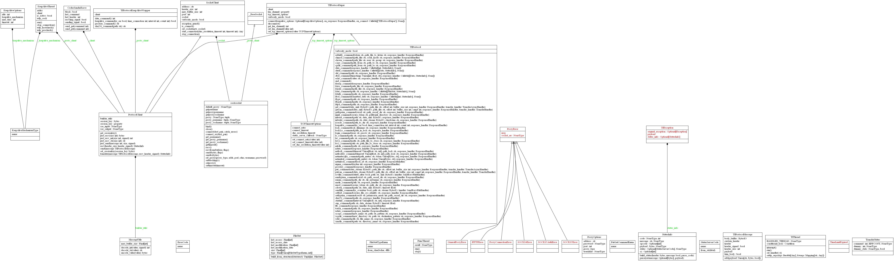

TFProtocol Client Implemented in Python :snake:¶


Introduction¶
The especifications for the Transference Protocol is available in this repository.
Installation :floppy_disk:¶

The package is available at pypi, to be installed from pip with the next command:
pip install tfprotocol_client
A Simple Example :memo:¶
To use the Transference Protocol through this library, you must create an instance of TfProtocol with the specified parameters and have an online server to connect to.
from tfprotocol_client.misc.constants import RESPONSE_LOGGER
from tfprotocol_client.tfprotocol import TfProtocol
ADDRESS = 'tfproto.expresscuba.com'
PORT = 10345
clienthash = '<clienthash>'
publickey = '<publickey>'
proto = TfProtocol('0.0', publickey, clienthash, ADDRESS, PORT)
proto.connect()
proto.echo_command('Hello World', response_handler=RESPONSE_LOGGER)
proto.disconnect()
For Contributors :wrench:¶

Development Environment Installation :computer:¶
To set up the development environment, all you need as a prerequisite is to have Python 2.7 or 3.5+ and poetry installed. If you need to install poetry follow these steps and come back.
With this in mind, to install the necessary dependencies and create a python environment for this project, proceed to run the following command in the root directory of the project.
poetry install
Project Structure :open_file_folder:¶
This library is made up of 5 folders and the particular implementations of the TfProtocolSuper
class, the folders are structured as follows:
connection: where all socket and low-level communication is located.
models where the complex objects used all over the package are defined.
security where is implemented the methods and classes to encrypt and decrypt the messages for communication and also the utils for do the hashing stuff where is needed.
misc to hold all utils and not related to any other folder concept.
extensions where are all the extensions for the Transfer Protocol Client .
Here the visual schema for all the classes and his relations with others:
Publishing :rocket:¶
To publish the package you need to run the following command in the root directory of the package:
poetry publish